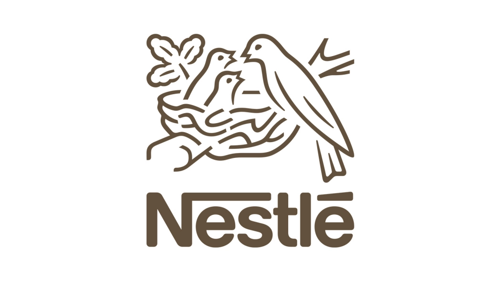

My experience working at Nestle
Manufacturing Excellence Intern · May 2025 to Jan 2026, 9 months
My role
From May 2025 to January 2026 I was a Manufacturing Excellence Intern at Nestle, where I worked extensively with the Microsoft Power Platform.
My role was mainly split into two parts. First, ensuring that all of the machines in the shopfloor runs smoothly for production, by performing validation tasks. Second, develop and deploy PowerBI dashboards for other departments to improve and optimise workflows.
What I worked on
- Time-motion, line efficiency studies and validation tasks to support manpower allocation.
- Turned Quality Assurance, Safety, Health and Environment and Human Resources metrics into Power BI dashboards.
- Automated routine tasks with Power Automate.
- Built a duty roster app with Power Apps.
The biggest project I worked on was a Consumer Complaints Dashboard requested by the
Quality Assurance Team. I worked with a massive dataset containing many different categories, subcategories, countries, and complaint reasons, alongside specific quality targets. To give the team full visibility, I engineered the dashboard to track key metrics including:
• Rolling year values and Year-to-Date (YTD) figures
• Month-over-Month comparisons (this month vs. last month)
• Year-over-Year comparisons (this month vs. the same month last year)
Coming into the internship with zero prior experience in Power BI, this was a steep challenge, especially since the role was mostly self-guided. I took the initiative to teach myself, relying heavily on Google, YouTube tutorials, and the company’s in-house LLM to troubleshoot issues and master complex data manipulation in Power Query.
Ultimately, the dashboard replaced their slow, manual Excel calculations, saving the team a massive amount of time. Today, it serves as a core tool that they actively use to drive their weekly meetings. It is really rewarding to see my efforts being utilized and adding tangible value to the company. While my role focused on the technical execution rather than the strategic decision-making, I am eager to bridge that gap and be more involved in the business and decision-making processes in my future internships and roles.
What I learnt
The most valuable technical skill I took away from this internship is effectively using the Microsoft Power Platform. My experience with PowerBI, PowerApps and PowerAutomate during this internship has made me a lot more familiar with its usage. Apart from that, I learnt the importance of good communication, especially when relaying information from a technical perspective to stakeholders who come from non-technical backgrounds
Highlights
I made a lot of friends during this internship of whom I am still close to now. It's amazing.